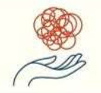
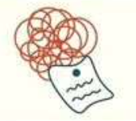
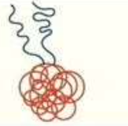
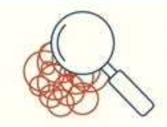

|  |
1 |
Turn towards your emotions
|
Identify and label
|
2 |
 |
3 |
Accept your emotions
Don't deny the emotions.
|
Realise the
impermananence
|
4 |
 |
|  |
5 |
Inquire and Investigate
Ask your self, "What triggered me?"
|
Let go of the need to
|
6 |